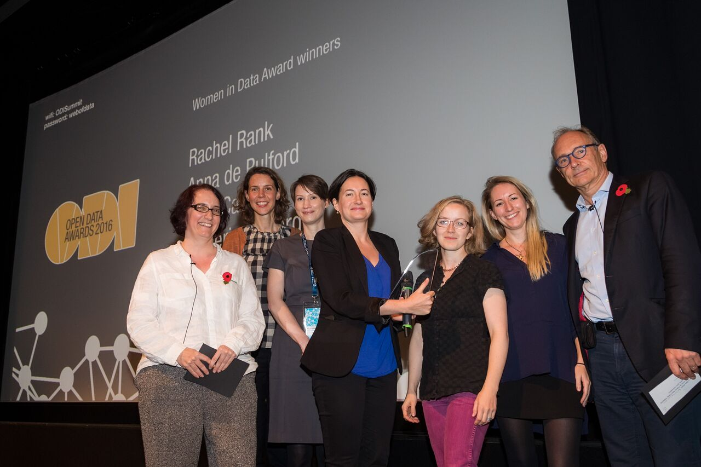

Open Data Awards 2016: open innovators from around the world
Yesterday, the Open Data Institute celebrated its third annual Open Data Awards at the British Film Institute in London, honouring innovation and excellence in open data across the world
 ODI CEO Jeni Tennison (far left), Sir Tim Berners-Lee (far right) and the team from 360Giving, winners of the 'Women in Data' award. Photo: The ODI
Hosted by ODI CEO Jeni Tennison, 80 delegates convened to recognise today’s unsung open data champions, after receiving 200+ nominations from Brazil, Nigeria and New Zealand, to Burundi, Mexico and Ukraine.
As a pioneer of gender diversity within the tech industry, the ODI has introduced a new ‘Women in Data’ award, recognising trailblazing women creating social, environmental or economic impact with open data, and/or people working on improving gender equality with data.
2016 Open Data Award winners
Open Data Business Award winner: cMapIT is an open access platform providing tools for citizens to track public policy and governance in Nigeria. Using geospatial data and drone technology the platform has improved government leadership, triggered a Nigerian civic tech community, supported health and agriculture sectors, and is recognised as the most effective way to track government activity in Nigeria.
Find out more about cMapIT in this Q&A
Open Data Publisher Award winner: Data Mill North, based in Leeds, is a UK–leading open data repository that publishes swathes of open data from all sectors in North England. Its use has led to new app development, analysis, websites and increased citizen engagement in the north.
Find out more about Data Mill North in this Q&A
Open Data Innovation Award winner: The Humanitarian Data Exchange (HDX) is an open data platform that convenes and shares a multitude of humanitarian data around the world. Since its beta-launch in July 2014, over 200 organisations have shared 4000+ datasets with 220,000 users worldwide and is now recognised as the ‘go-to’ for crises data worldwide.
Find out more about The Humanitarian Data Exchange in this Q&A
Open Data Social Impact Award winner: OpenOil has the largest open corporate document database for oil, mining and gas companies. Using this data, it provides governments, civil society organisations and businesses with frameworks for understanding and analysing the extractive industries. Under its public interest financial modelling program, it uses open data to create financial models of oil, gas and mining projects, which enable better governance of natural resources.
Find out more about OpenOil in this Q&A
Open Data Individual Champion Award winner: Giuseppe Sollazzo is known for his open data policy expertise, writing, advocacy and activism. He has worked as an Open Data User Group policy expert and is the co-founder of OpenDataCamp and UKHealthCamp. He was also named one of the JISC 50 Most influential higher education professionals on social media.
Find out more about Giuseppe Sollazzo in this Q&A
Women in Data Award winner: 360Giving is the first worldwide project that has created an open data standard for the notoriously opaque grant-making sector. Recently the female-led team launched Grantnav, a search tool for charities to see who is funding what, where and how much.
Find out more about 360Giving in this Q&A
‘Generation Open’ fuels global progression
Jeni Tennison, CEO at the ODI said:
The Open Data Awards are a brilliant opportunity to reflect on the enormous positive impact the open data movement has achieved. Whether it's opening up data to help charities find funding or using open data to promote transparency in the oil industry, our winners represent the people and organisations on the frontline who are working tirelessly to ensure that the potential of open data is realised. Congratulations to both our award winners and nominees for their achievements – and thanks to our judges and team for reaching such a diverse set of leaders and innovators from around the world.